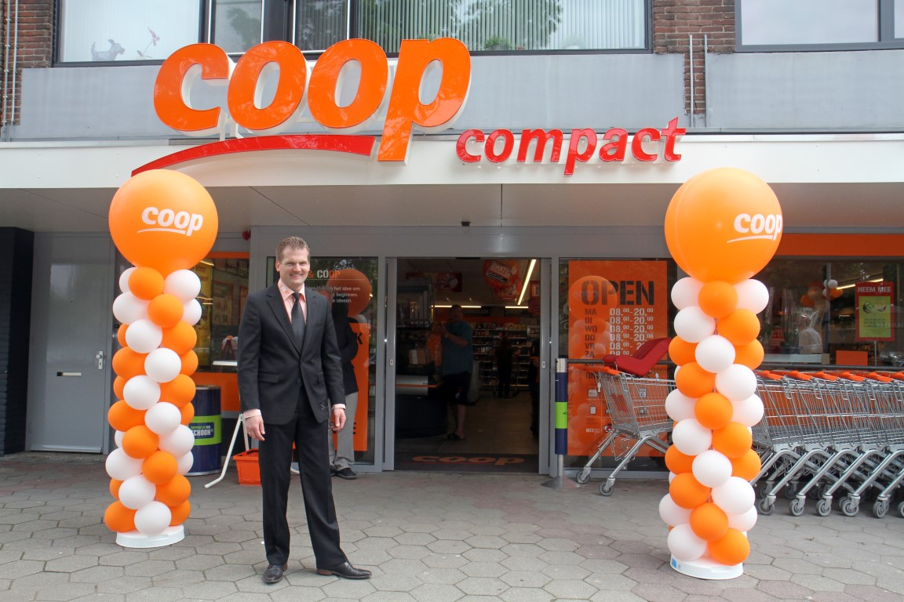

Ik ben Mats Verlinden, ik ben 16 jaar oud en woon al heel mijn leven in Alblasserdam
Ik ben een rustig persoon, en ik hou van films en series kijken. Momenteel doe ik geen sport. Ik heb vroeger een tijdje tennis gedaan en laatst heb ik nog op korfbal gezeten maar omdat ik in een team kwam zonder vrienden ben ik weg gegaan. In de ICT wereld ben ik redelijk nieuw maar ik probeer zo snel mogelijk zo veel mogelijk te leren zodat ik later een goede en leuke baan kan krijgen en zodat ik iets heel leuks kan maken om trots op te zijn.
Voordat ik deze opleiding ben gaan doen heb ik op het Willem de Zwijger College in Papendrecht gezeten op het niveau Mavo en daarvoor ben ik geslaagd.
klik hier voor de site van de school
Ik heb ook werk. Vroeger had ik een bijbaan als krantenbezorger in mijn wijk, maar na een jaar had ik daar geen zin meer in omdat ik dat soort werk niet zo heel leuk vond en daarom ben ik gaan zoeken naar een baan bij een supermarkt. Die supermarkt werd de Coop waar ik nu nogsteeds werk samen met een goeie vriend van mij. In een week werk ik verschillende tijden, maar meestal ongeveer 6 uur per week.
